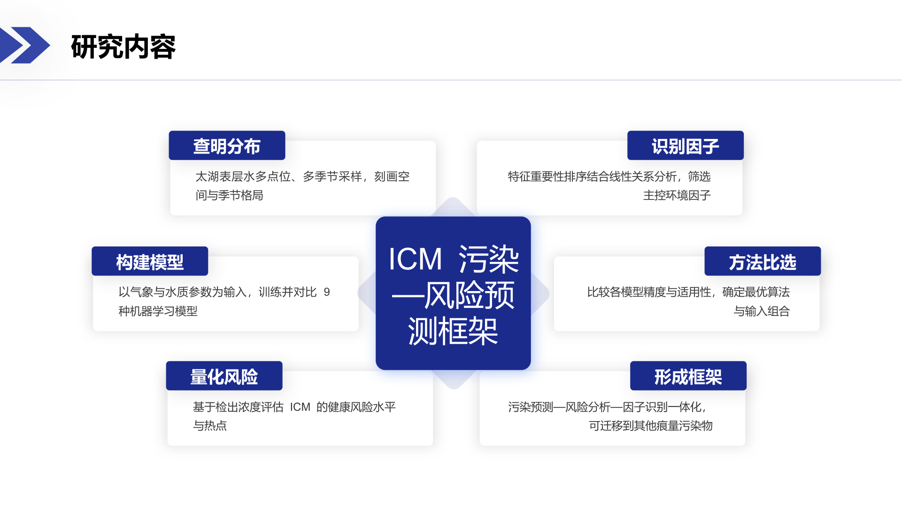
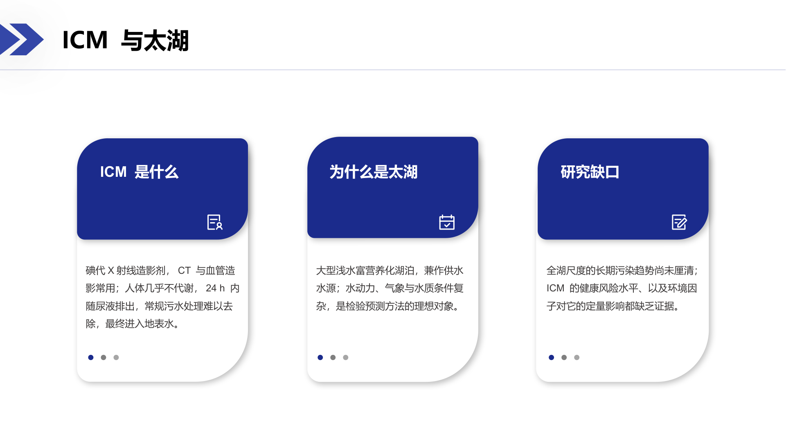
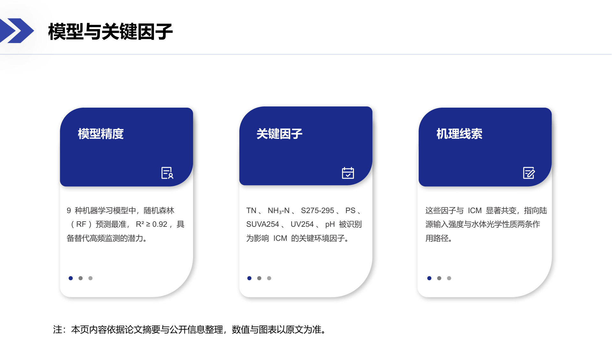

环境 · 生态 · 科研向
你给稿子和数据，我重排结构、重画图、补上讲稿。学校模板也能改，不动字号和配色。
下面三页都是同一份材料改完之后的样子：一页只放一个结论。



原来一页塞五条要点，改成一句结论加三条支撑。目录、章节页、结尾按你的章节数重排。
五个颜色的柱状图收成一个强调色；热图换单色阶；误差棒补齐 n；图例压进坐标系里省出空间。
每页配一句口语化的话，说明这页要让人记住什么。答辩被追问时照着讲，不会卡。
按页数和是否需要重画图定价，先看稿再报价，不议价式拉扯。
不代写论文，不替数据下结论。只做表达、排版和图的呈现。
小红书搜「组会汇报景岚」，私信说清「方向 + 页数 + 什么时候要」，我会先回结构建议。
通常 看稿当天 给结构建议，2–4 天 交初稿。